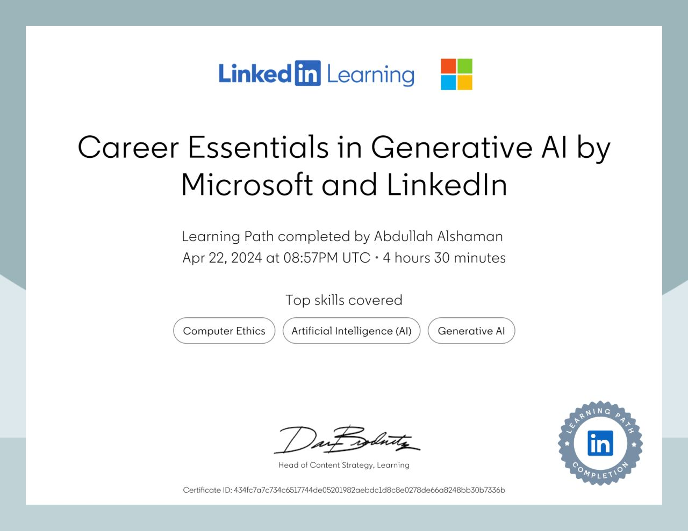
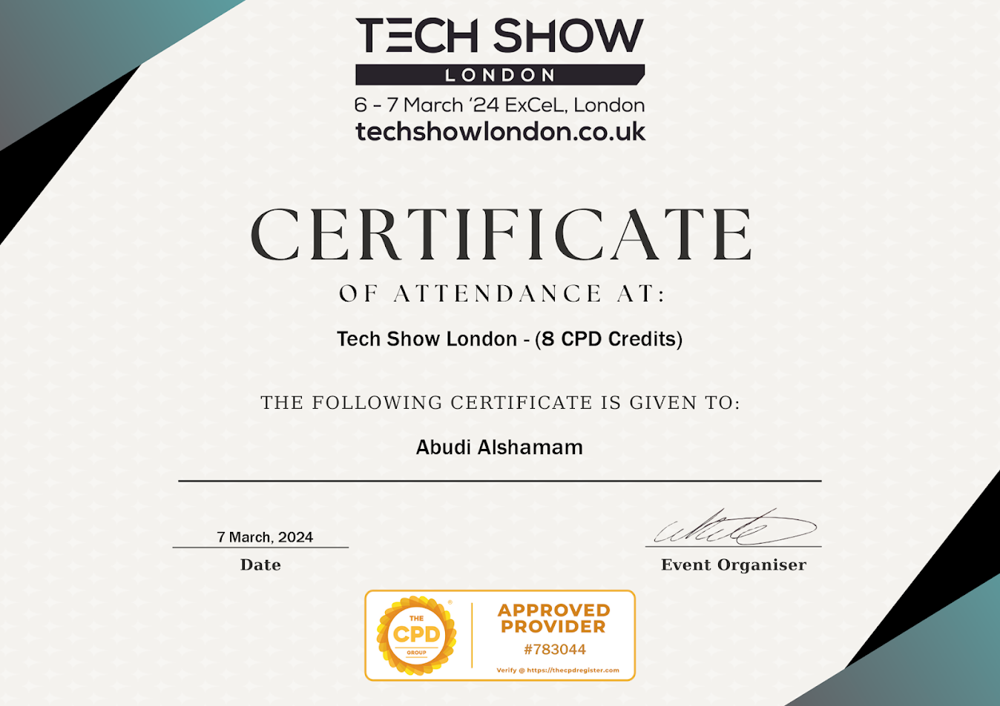
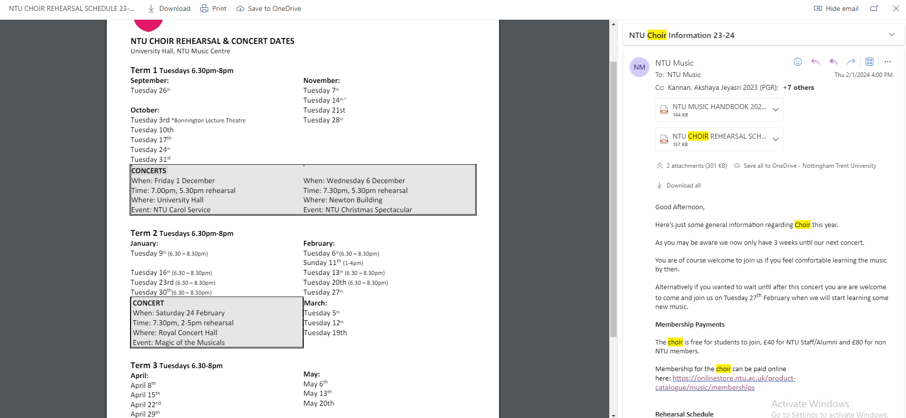
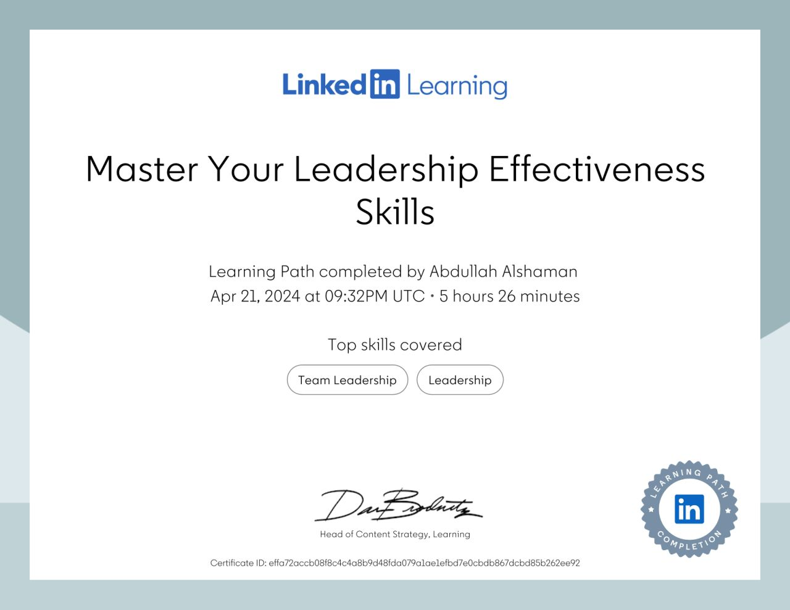
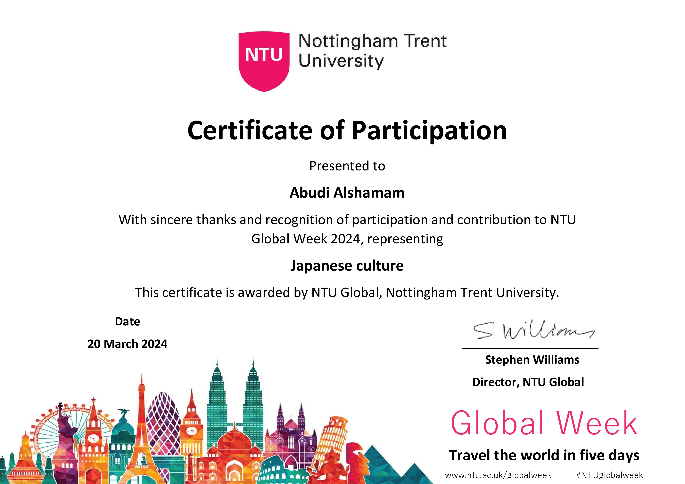
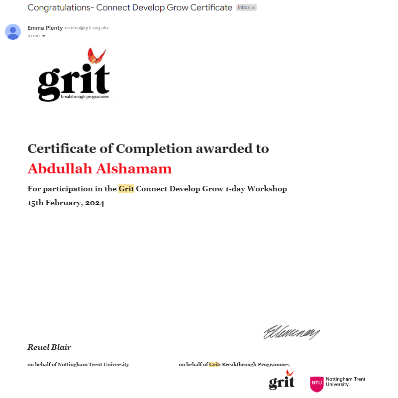
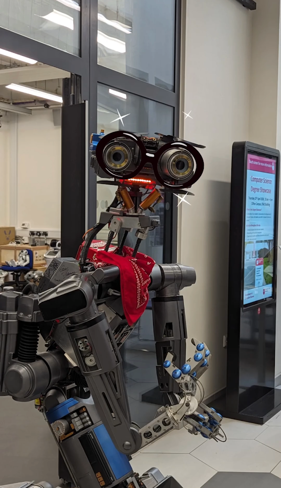

Knowledge and skills development
| Activity Name | Date | Activity Type | How It Supports Your Development | What Happened During the Activity | Next Steps | Hours Claimed |
|---|---|---|---|---|---|---|
| GRIT Workshop | Feb 15th | Extracurricular | Self-improvement: Resiliency, Goal setting | Explored expectations vs. reality through the "menu vs the meal" analogy, focusing on resilience and proactive feedback when outcomes don't meet expectations. | Apply learned models for realistic goal setting in programming projects; refine approach through experience. | 5 hours |
| Global week – Japan Culture | Feb 26th - Mar 1st | Culture festival – Stall assistant | Cultural awareness: Understanding diversity | Assisted at a cultural stall, shared Japanese cuisine and culture, and demonstrated “Kendama,” enhancing understanding of cultural diversity. | Continue exploring diverse cultures to enhance ability to connect with international teams and businesses. | 5 hours |
| ExCel Expo London | Mar 7th | Tech Expo | Industry insight: Understanding AI competitors | Attended presentations and demos, analyzed AI technologies, met industry peers, and networked with professionals from SambaNova Systems. | Maintain connections for future job and collaboration opportunities; stay updated on AI industry trends. | 8 hours |
| Johnny 5 Robot Showcase | Mar 14th | Robot Showcase | Technical understanding: AI programming and potential improvements | Observed and discussed the design and technical aspects of Johnny 5, focusing on its autonomy and potential for improvement. | Explore further projects in AI, particularly those improving autonomy in robotics. | 1 hour |
| LinkedIn Learning: Master Your Leadership Skills | Apr 21st | Online Course | Leadership development: Motivating peers, enhancing communication | Learned strategies for effective communication, compassion, and responsibility to lead teams towards shared goals. | Seek a leadership role to apply these skills, aiming to positively impact team dynamics and project outcomes. | 5 hours |
| Career Essentials in Generative AI by Microsoft and LinkedIn | Apr 22nd | Online Course | Skill enhancement: AI techniques, ethical considerations | Covered practical applications of generative AI, best practices in AI development, and ethical considerations, focusing on technologies like ChatGPT and Microsoft CoPilot. | Apply ethical considerations and AI techniques learned to future projects; lead discussions on AI ethics. | 4.5 hours |
| NTU Choir | Mar 18th Weekly sessions | Extra Curricular | Skill enhancement: Stage Freight, responsibility | Doing rehearsals and being responsible for my own part of the song. Focused on improvement ourselves inorder to bring the most out of the upcoming performance. | Once I'm more knowledgable about the subject, I would like to advice others too rather than just focusing on myself. | 5 hours |
Total Time : 35 hours
      